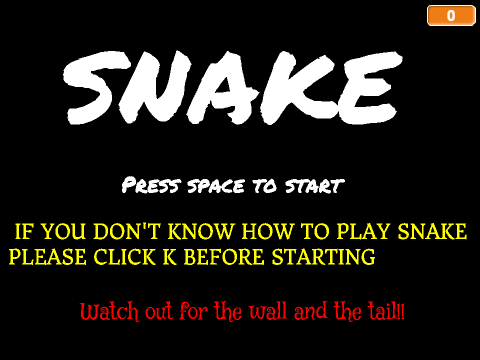
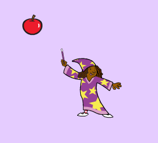
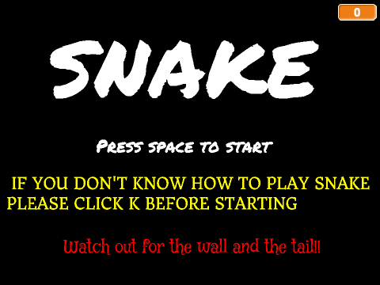
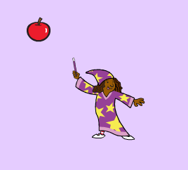
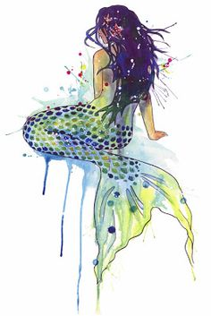

Home
About
Portfolio
This is my Portfolio Page!
 



The purpose of the Snake game is to make the tail grow longer and eat the fruit to get more points.
For this game that I make on scratch, I used the forever loop to make the snake go in same patterns.
I also used "when spaced is press" to let the players to have help options or move around durig the game.
The difficulties I encountered during the game was I couldn't make the fruit appear again after the snake eats it.
However, I set it as if the color of the snake is touching the fruit then place the fruit somewhere else in random.

This mermaid fictional story evolves around a mermaid and her bracelet. The plot of the sotry is either to fall in love
with a human or to fight against the Evil Queen. To successfully complete the story, creator has to know how to use a
loop to continue the story. Also create different conditions of what if certain keys are being pressed. There was a
problem that came up while I was working on this story. The problem was I couldn't loop back the decision point
to the previous one, but I solved it back writing the function at the end of every decision points. I really
like the idea of letting others to make decisions and have a particular ending based on their choices. Recalling
the stories I have read, I really liked this one story where you have to choose a type of cake for your mom, but
when you choose a certain cake it lets to the ending. If I have chance to do this over again, I would like to add
more interesting ending.